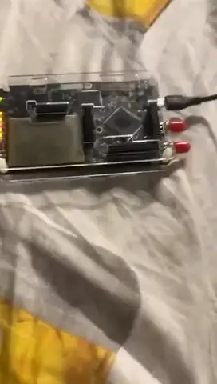
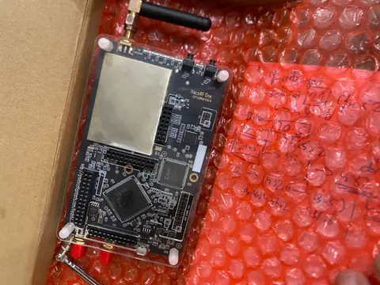
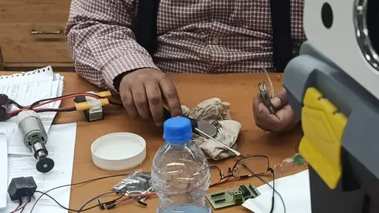
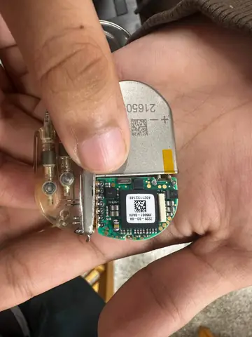
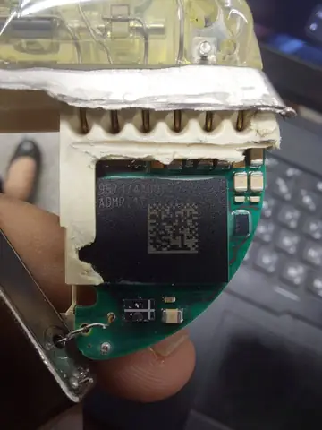
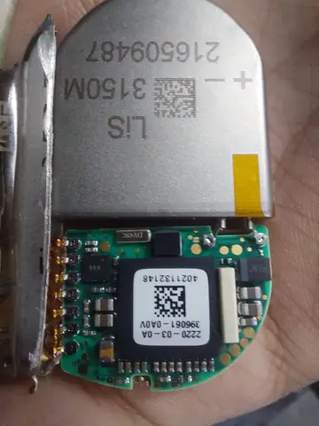
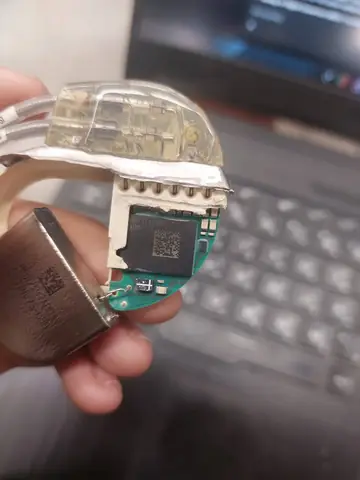
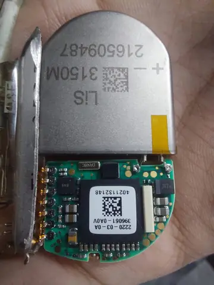
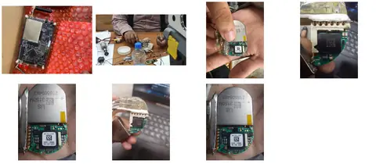

Black box BLE and energy characterization of a commercial implantable cardiac device.
Motivation
Wireless access can move an implantable device from deep sleep into a more expensive communication state even when no privileged manufacturer tools are available.
Work completed
- Powered and instrumented a laboratory Medtronic device for repeatable measurement.
- Used HackRF, nRF52840, ESP32, and custom scripts to study advertising and connection behavior.
- Crafted BLE attempts across security modes to extend the observed connection window from roughly two seconds to 10.81 seconds.
- Measured energy across deep sleep, beacon, and connectivity states.
Outputs
- Measured 1.56 to 1.93 millijoules per 10.6 second connection.
- A single connection used energy comparable to roughly 40 to 71 minutes of deep sleep.
- Characterized a fixed 10.81 second authentication window.
Photos and videos
Gallery
Pacemaker Security

Pacemaker Security

Pacemaker Security

Pacemaker Security

Pacemaker Security

Pacemaker Security

Pacemaker Security

Pacemaker Security

Pacemaker Security